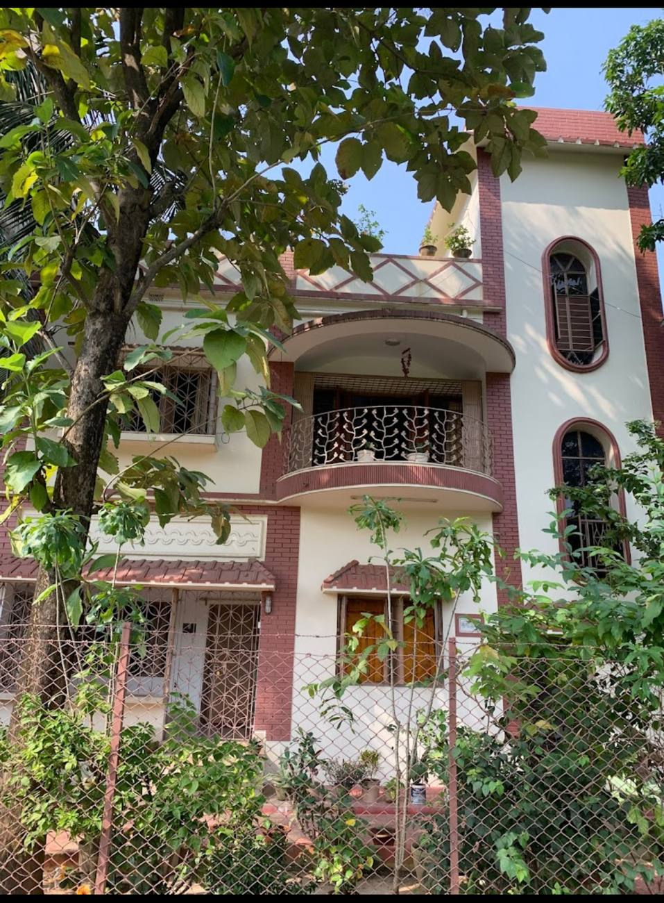
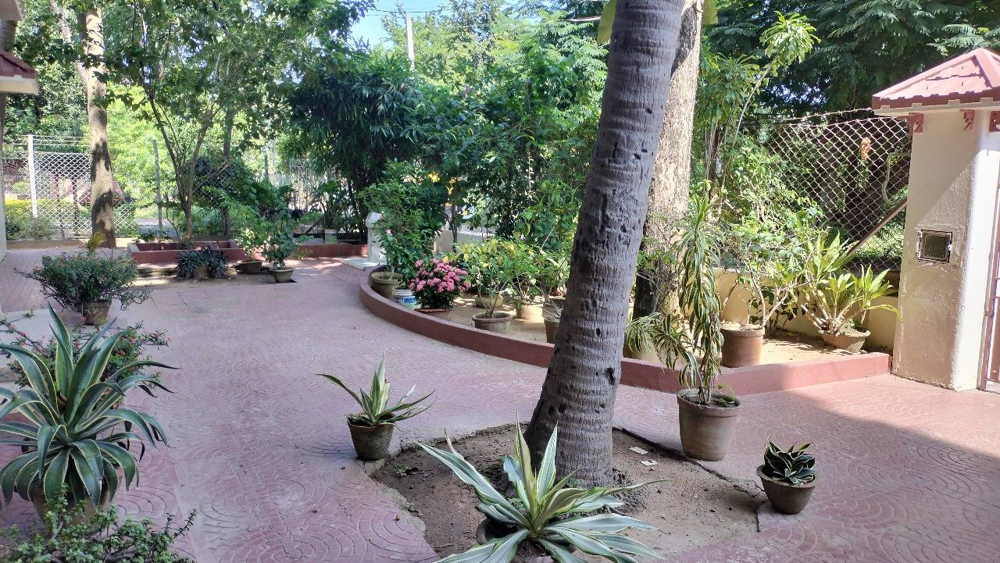
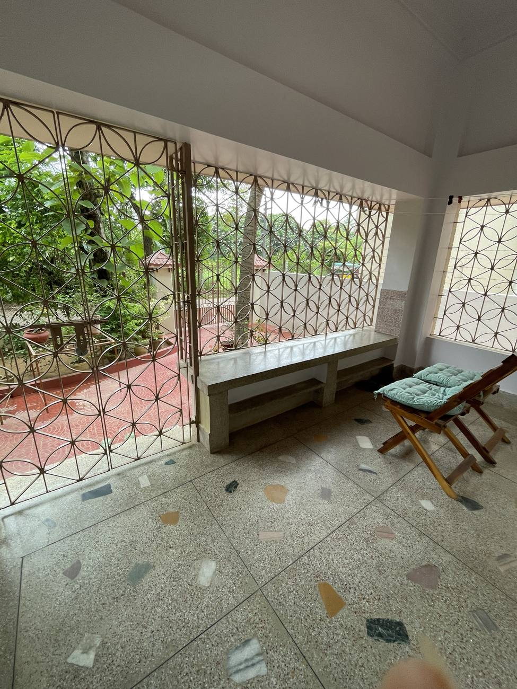
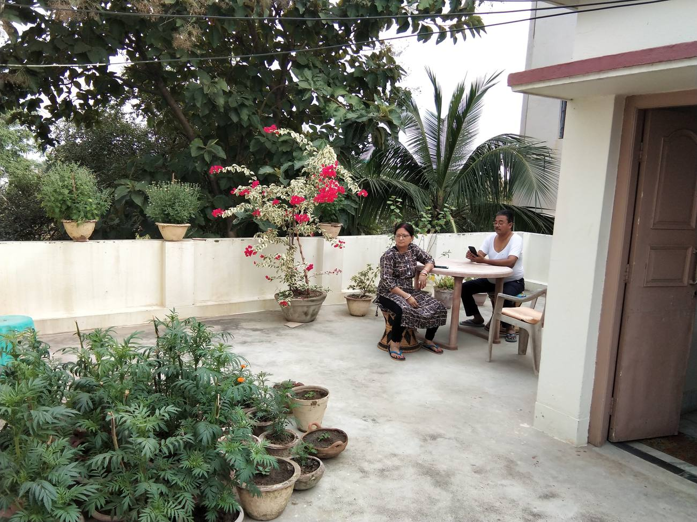
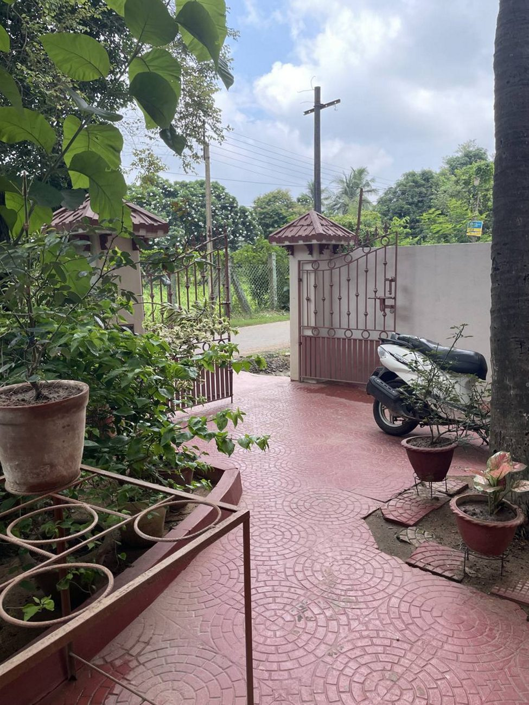

Nandan Gallery
Facing the museumArtists show here regularly — ask the security what is on and walk in. Ramkinkar Baij's sculptures are scattered across the campus around it.
মিত্র স্টে · শান্তিনিকেতন
Jambuni Sericulture Road, Bolpur, Birbhum, West Bengal 731204

Mitra Stay is not on the tourist stretch, and that is rather the point. It stands in a quiet residential lane two kilometres out, where the days are unhurried and the evenings are made for walking.
You come in through an iron gate onto a red-oxide courtyard laid in swirls — past aloe and bougainvillea and a coconut palm that came up through the paving long before anyone thought about parking. Inside it is cool and plain: terrazzo underfoot, whitewashed walls, wrought-iron jaali at every window so they can be left open.
There is parking in front, a grocery next door, and the market a hundred metres on.


Spacious and airy, each with a private washroom and a private balcony — with its own entry and exit, so you come and go on your own schedule.
In every one of the six
In four of the six
Say so when you book if you want one — there are only four, and they go first.
What each room costs, by the night
The plainest room we let, and priced accordingly. A bed, a fan, a study table with the kettle on it, and a window onto the banana grove. Nothing decorative that isn't already in the house.
A proper double: air conditioning, a wooden almirah with glass doors, and a dressing table with a mirror that has been in the house a long time. The dining room and the balcony beyond it are shared with the family.
The December rate covers the Mela days, when the town fills up and rooms go early.
We keep no dining room — and four of the six rooms don't need one. They have a kitchen of their own: gas, sink, filtered water, and every pot you would want.
A grocery store is next door and the market is a hundred metres on. If you would rather not cook at all, every other way to eat is below.
Bonolokkhi's tourist lunch must be booked by 10 AM; Bharat Sevasram Sangha at Muluk serves a satwik lunch on donation, called for the evening before. Cafés at Ratanpally and inside the campus. We send you the phone numbers for all of these once you have booked.

Ours is a residential area, so the sights are not walkable — but the roads are uncrowded and almost everything is a quarter of an hour by e-rickshaw. Two toto drivers we trust work with us at fair prices.
Artists show here regularly — ask the security what is on and walk in. Ramkinkar Baij's sculptures are scattered across the campus around it.
A private museum of natural rock sculpture. Easy to pair with a Saturday at Sonajhuri.
Krittika, Tokaroun, Mrittika and SSVAD for art; Hasa and Lipi's for Shantiniketan-aesthetic ceramics — Hasa is loveliest in the evening.
Shibori and kantha stitch with Karma Ashrama and Papri Basak; Robi Bhaskar carves wood at Palashbuni Gram, and any toto knows the way.
You can walk to Auroshree market with the campus gate right there, or out to Sriniketan for the agricultural departments.
Raipur and Surul, both an easy half-day. Amar Kutir, the society-run craft shop, sits between them.
Chinpai Dam, Hetampur Rajbari, and Tarashankar Bandopadhyay's house at Labhpur.
Kankalitala, Labhpur and Attahaas; temple trails at Illambazar, Ghurisha, Joydeb Kenduli, Nanoor, Supur and Itonda.

Bolpur Shantiniketan station is two kilometres from the door. Send us your train number and someone will meet you — the lane is easier shown than described.
Good to know
Write to us
Tell us your dates, how many of you there are, whether you want a kitchen, and which train you are on. A person replies, not a system. The guest guide follows once you have booked.
Take the post-dinner stroll. The neighbourhood after dark is calm, safe and lovely — that is our one piece of advice, and we give it to everyone.
Ask about dates